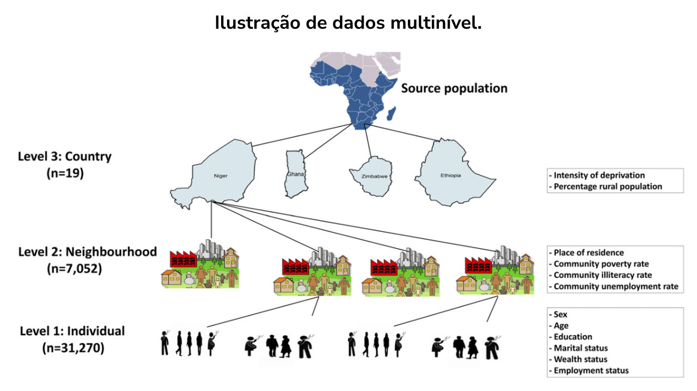

Módulo 3 | Aula 3
Dados com estruturas de dependência: multiníveis, séries temporais e espaciais e sobrevida
Modelos Multiníveis
Os modelos multiníveis também são conhecidos como modelos hierárquicos. São uma classe de modelos estatísticos usados para lidar com dados que têm uma estrutura hierárquica ou agrupada, permitindo a análise simultânea de efeitos de nível de grupo e individual em desfechos individuais, conforme a figura a seguir.

Esses modelos são especialmente úteis quando os dados possuem dependências entre observações dentro de grupos, como alunos em escolas ou pacientes em hospitais.
O uso de modelos multinível em problemas de saúde pública tem sido impulsionado pelo entendimento crescente da importância de determinantes da saúde em nível ecológico, macro ou de grupo, e a noção de que variáveis referentes a grupos ou a como os indivíduos estão relacionados entre si dentro dos grupos pode ser relevante para a compreensão dos resultados de desfechos em saúde. A ideia contemplada por esses modelos é a de que os indivíduos podem ser influenciados por seu contexto, sendo possível a interação entre características dos grupos e individuais.
Para o caso mais comum em que temos dois níveis (ex.: indivíduos aninhados dentro de grupos), o modelo pode ser formulado como um sistema de equações em dois estágios, nos quais a variação individual dentro de cada grupo é explicada por uma equação (de nível individual) e a variação entre grupos é explicada por outras equações, que descrevem os coeficientes da equação de nível individual. Seguem adiante as equações para o caso em que temos uma variável independente para o nível individual e para o nível de grupo, com as variáveis dependentes normalmente distribuídas (mas, obviamente, os modelos podem ser estendidos para incluir o número necessário de variáveis independentes).
Essa primeira equação é para o nível individual, em que:
- Yij é o desfecho do i-ésimo indivíduo pertencente ao grupo j.
- Iij é o valor da variável do i-ésimo indivíduo pertencente ao grupo j.
- εij são os erros individuais, que, dentro de cada grupo, são independentes e normalmente distribuídos com média zero e variância σ2.
Os mesmos regressores são usados como variáveis explicativas em todos os grupos, contudo os coeficientes β0j e β1j variam de acordo com eles (por isso, eles têm o índice j, relativo ao grupo). Então, esses coeficientes são determinados pela segunda parte de equações como funções de variáveis de nível de grupo, como a seguir.
em que:
Esse segundo set de equações é para o nível de grupo, em que:
- Cj é uma variável de nível de grupo.
- U0j e U1j são os erros de nível de grupo, independentes e normalmente distribuídos, respectivamente, com média zero e variâncias τ00 e τ11.
- O termo de erro de grupo U0j representa o desvio do intercepto de cada grupo do intercepto geral γ00, após contabilizar o efeito de Cj. Já U1j representa o desvio da inclinação dentro de cada grupo em relação à inclinação geral γ10, também após contabilizar o efeito de Cj.
- τ00 e τ11 representam as variâncias de b0j (intercepto do modelo individual, que pode variar de acordo com os grupos) e b1j respectivamente (inclinação do modelo individual, que pode variar de acordo com os grupos).
Dessa forma, na análise multinível a informação dos grupos entra nos coeficientes estimados para os indivíduos, que são descritos pelas equações de b0j e b1j. Esses coeficientes de nível de grupo contêm duas partes: (i) a fixa, que não muda independentemente do grupo (γ00 e γ01), e (ii) a aleatória, que varia de grupo para grupo (γ10 e γ11).
Dessa forma, o interessante dos modelos multiníveis é a possibilidade de separação dos efeitos do grupo e individuais. Algumas perguntas mais clássicas em saúde pública respondidas por modelos multiníveis são:
Modelos multiníveis são versáteis e podem acomodar variações, tanto dentro dos grupos (níveis mais altos como hospitais, escolas, regiões geográficas) quanto variações individuais (como pacientes, alunos, profissionais da saúde), permitindo análises mais precisas em contextos complexos de saúde.
Faça você mesmo!
É hora de praticar! No script modulo3aula3_atividades.R (Atividade 1), ajuste um modelo multinível com pacientes aninhados em hospitais, compare com o modelo comum (lm) e interprete os efeitos fixos e aleatórios.